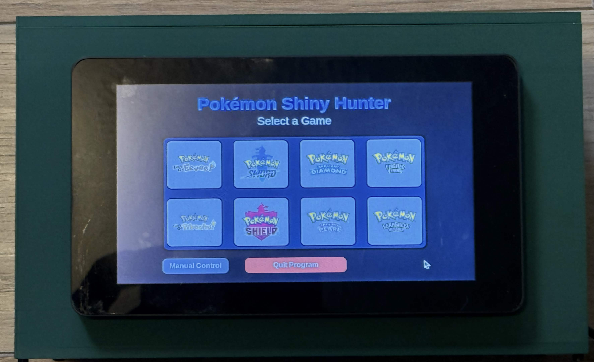

S
h
i
n
y
H
u
n
t
e
r
A Pokemon Shiny hunter made entirely from scratch!
This is my Pokemon Shiny Hunter which is designed to hunt Shiny Pokemon on the Nintendo Switch or the Switch 2!

The Raspberry Pi Connects to the Switch via a Capture Card and a Bluetooth Controller!
This setup uses NXBT to control the Switch. NXBT is a clever tool that emulates a Bluetooth Controller, making it a noninvasive way to control the switch. The switch could be wired in to the Pi, but this is an extra hassle.
Once the Pi is hooked up to the Switch, it is able to read the screen with OpenCV and the Capture Card.
Actually Hunting the Pokemon is down to using an algorithm and waiting for the sparkle of a shiny. This tool hunts for the shiny through soft-reset methods, and detect the shiny through a special animation it plays. The shiny animation takes about 5 seconds, and it takes advantage of that time to detect the shiny.
The biggest hurdle that I have had to overcome with this project is NXBT itself. While it is easy to set up as it is Bluetooth, it is inaccurate. Many inputs were getting dropped and other similar issues.
My fix for this was to add in a series of checks. Everytime something major is supposed to happen, the Pi double checks to make sure the screen is in the right spot.
This happens for making sure the encounter is loaded, the game reset, and the game is properly loading. This keeps us on track and avoids failing due to common problems.
One cool thing I did with this project is hook it up to discord. On the discord I have it hooked up to, it sends updates every reset, and then sends a picture if it finds a shiny!
This is very handy because it allows me to see what is going on while I am out and about. I can see if it is still running or if a shiny pokemon has been detected!